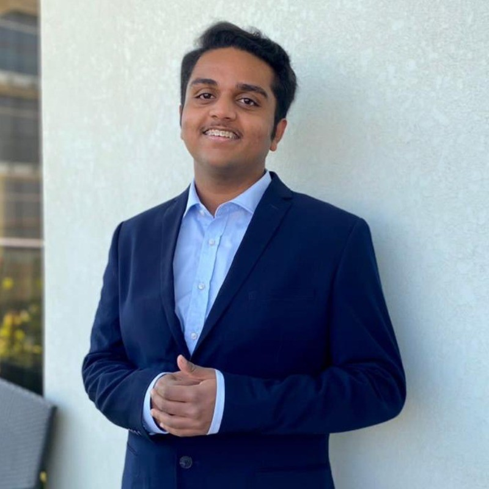

Chemical Engineering (Computer Process Control) at the University of Alberta — working across process simulation, embedded controls, and applied software.
Most recently built a fully local AI document pipeline as an extern at Pfizer.
Open to internship and full-time roles in process engineering, controls, and automation across Canada.
Click any project to see the goal, approach, and results.
Where I've applied this work.
AI Document Insights Extern
Jun 2026 – Aug 2026
Pfizer · Remote (via Extern Platform)
Telemetry Systems Design
Sep 2024 – Sep 2025
UofA Solar Car Club · Student Design Team
Sponsorships Committee Member
Sep 2024 – Sep 2025
UofA Solar Car Club · Student Design Team
Python, MATLAB, SQL, Arduino IDE
Aspen Symmetry, Simulink, Simscape, Process Modeling, PID Control
SolidWorks, Raspberry Pi, Data Acquisition, WaveForms, Excel